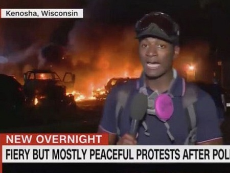

Thoughts on the mid April People's Party of Canada Rally in Vancouver
May 1st, 2021
NOTE: I originally wrote this on April 13th, but published this elsewhere.
So over the weekend Maxime "semi-chad" Bernier was throwing two rallies. The first, and oh my fucking god do I regret missing out on this one, was an anti-SOGI rally. SOGI is Sexual Orientation and Gender Identity curriculum for BC schools. It's basically Perverts Abusing Children. I'll get to what a fucking legendary rally that turned out to be (a bunch of naked trannies showed up), even though I only found out why when going to court today.

Vancouver Psychologist Wallace Wong
The above image is a book promoted by the literally HIV positive sodomite Wallace Wong. He's crucially important in the SOGI sphere, but I'll get to them later.
Anyway, so this Bernier rally on Sunday was about how COVID is "muh freedom" I mean I really can't even be bothered to finish the sentence. It's the typical gay cuckservative bullshit, mixed in with a pack of weirdos unrelated to the People's Party of Canada who are going on about Q-tard level conspiracy shit. You can see everything you need to in the video I took of the event.
It's not exactly my best videography, but I think everyone will get the point.
As an aside, there were also a bunch of Asians dressed up in yellow suits who were protesting the Chinese Communist Party harvesting their organs or something. They tried to get me to sign some things, but I was like "guys, I really don't know what you expect me to do to the Chinese Communist Party, but I hope your organs remain inside your body."
Taken from a different protest, I didn't get a picture of them myself
I'm being a little unfair, it was "something something falon gong, something something political prisoners, something something harvest organs." I think it's actually a very good learning lesson for how to effectively get across your political message without sounding like a crazy person.
Normal people will definitely believe the CCP cracks down on weird religions. I don't think anyone would doubt that they throw these people in jail for bullshit reasons. However, true or not, "they're harvesting our organs," sounds a little bit unbelievable. And I didn't really show it in the video, but they're really butthurt about the organ thieving stuff. Like, you almost don't know what's going on except CHINESE COMMUNIST PARTY STEALING OUR KIDNEYS! It's kind of weird. If I was in charge, I would mostly skip the organs part, and do something like:
"The CCP is oppressing this totally harmless religious group. And they are also being thrown in jail. Also, when they die, their relatives don't get to bury them, and as one of many insults, they even mandatorily sign them up as organ donors. So their families don't even get to bury them according to their religion and human decency."
It doesn't even matter if the CCP is legitimately harvesting peoples organs. That's so evil that it's kind of funny. The above resonates much more with people, and is more believable. I repeat, even if the above is a lie, it is more believable.
I think it also shows a sort of cargo culting that I just talked to someone else about, that we will also see with the No New Normal/Bernier Rally that is the main focus of this article. The so-called "left" protests as a way of pretending that their unpopular anti-social agenda has some grassroots groundswelling of support. Our goys were treated at Charlottesville the way actual political dissidents are treated. And while these Falon Gong protesters probably have quite a case to make, if the (((Privileged Class))) is not already sympathetic to your cause, and can use you as effective golems, it really does not matter how many signatures you can get random people in Vancouver to give you.
See how the propaganda treats privileged "protesters"
I really don't think that the Chinese Communist Party, which has made the relatively firm decision to start harvesting people's organs is gonna be like "well fuck, Timothy Coish signed this petition to make us stop harvesting organs. I guess we had a good run, but it's all over now." They're a nuclear superpower and I'm not gonna do shit to them.
But that's besides the point. The point is the "No New Normal/PPC Rally." Which started off on a really bad footing I might add. I didn't catch it on my phone, but some fag at the microphone loudly said to the crowd "HEEEY FREEEEEEEDOM FIGHTERS," as I entered the plaza. I could not have cringed harder if I walked in on my elderly, obese parents having kinky sex.

"Pound me like you did when we made Timothy!"
So I made my way to the PPC tent after this, already sweating from the cringe, and talked to the clueless PPC old lady working the thing. She seemed extremely nice, and genuine. When I asked her what the PPC platform even was, she couldn't answer, and didn't have any stuff. However, the very first thing out of her mouth was "immigration."
This is very important goy, because recent events with the NCA and the PPC have caused me to come to a very clear conclusion. There are two groups of people who go to these things. Weirdos who want a social club. And normal people who feel (correctly) utterly unrepresented in "Representative Democracy". The latter group massively outweighs the former, but the former stick around, while the latter typically show up to a few events and go "oh, this is disappointing, these people are weirdos as well. Shucks."
Anyway, after the PPC tent I got trapped into a conversation with some guy who went on and on and on about Bill Gates and "interview in 1991 talking about 95% of the worlds' population needing to die," "patent for inserting microchips in people," "UN declaration 21." Like, just fucking on and on and on.
Then I talked to the literally jew girl Naomi Chocyk, who was put in charge of Regional Coordination for Vancouver, and she seemed like a 120 IQ person who basically doesn't give a shit. The party is absurdly incompetent, and can be accurately described as Maxime Bernier's low tier grift. I mean I don't think it started that way, but I think he's pretty sure that the party is going nowhere, so that's where we've ended up.

He does at least still have good aesthetics
At one point I was 50-50 on just flat out walking up to the mic and saying something. I didn't have much of a speech prepared, but I can talk forever, and people love my babbling. In retrospect, I should have, since if I had gone up there and done my "fuck Mark Zuckerberg" routine, this crowd would have been receptive.
Anyway Bernier himself was like 40 minutes late for his gay little speech. First Naomi "The Jew" Chocyk gave her speech. It was like 1 minute long and included the phrase "together we stand unbroken," and other gay shit like that. Then Bernier gave his speech, which was about 10 minutes long. It was also really gay, but at least was moderately well written. There were a few moments where the audience was supposed to cheer, and the cheers were tepid at best, but it didn't fall completely flat.
I was so bored halfway through I went back to talk to the Asians about the organ harvesting some more, since that seemed more interesting. They gave me some pamphlets. I was tired of standing.
I came back for the finish of Bernier's speech. I'm getting really tired of faggots doing the whole "and muh freedoms blah blah," and not "hey, do you see these propagandists NOT shutting down BLM chimpouts, pretty gay amirite?" But no, instead of focusing on how fake the COVID response is, we argue about freedoms in the abstract.
 And no, it wasn't just me. There was a very clear divide between the weirdos who cheered at the right moments in the "muh freedom" speech, and normal people who just stayed silent the whole time. In fact, there was this one pretty cute blonde girl in front of me with her mother, and they both just left before the end of Bernier's speech. This is what I mean by normal people who want representation figuring out that these parties are just for weirdos and leaving.
TL:DR: There are normal people desperate for a voice, and they're not being satisfied. However, the existing political parties are full of weirdos and grifters.
And no, it wasn't just me. There was a very clear divide between the weirdos who cheered at the right moments in the "muh freedom" speech, and normal people who just stayed silent the whole time. In fact, there was this one pretty cute blonde girl in front of me with her mother, and they both just left before the end of Bernier's speech. This is what I mean by normal people who want representation figuring out that these parties are just for weirdos and leaving.
TL:DR: There are normal people desperate for a voice, and they're not being satisfied. However, the existing political parties are full of weirdos and grifters.

And no, it wasn't just me. There was a very clear divide between the weirdos who cheered at the right moments in the "muh freedom" speech, and normal people who just stayed silent the whole time. In fact, there was this one pretty cute blonde girl in front of me with her mother, and they both just left before the end of Bernier's speech. This is what I mean by normal people who want representation figuring out that these parties are just for weirdos and leaving.
TL:DR: There are normal people desperate for a voice, and they're not being satisfied. However, the existing political parties are full of weirdos and grifters.